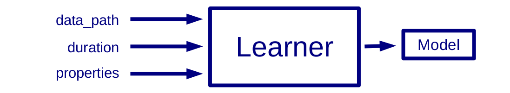
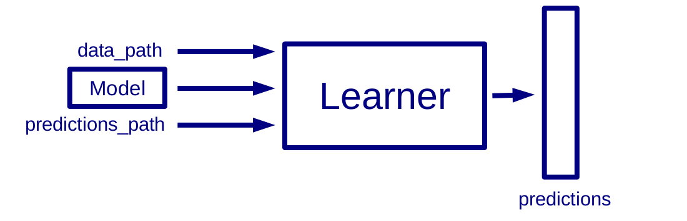

How to add a learner
FCUBE allows users to integrate their own stand-alone learning algorithm in the framework. Below we describe the input/output specification of FCUBE learning algorithms and the steps necessary to add new learners to FCUBE's repository.
Step 1: learner input/output specification
Your learner must be compliant with FCUBE's input/output specification; we provide an example learner GPFunction (one of our Java learners for numerical features) together with a split of the higgs dataset that you can use to debug yours:
Learner Training interface

Inputs:
- a path to a CSV file: we support csv files with and without headers. When headers are included, the first line of the file contains the name and type of the features (integer, float, or nominal). Check this dummy dataset with headers and without headers and this split of the Higgs dataset with headers and without headers.
- learning time deadline
- Properties File with Java syntax for your extra parameters. Check this example.
Outputs:
- a model stored in a single file on disk
Example with our GPFunction learner:
$ java -jar gpfunction.jar -train higgs_noheader_02.csv -minutes 10 -properties params.properties
Learner Predict interface

Inputs:
- path to a CSV file
- path to where the model is stored
- path to where the predictions will be stored
Outputs:
- predictions in CSV file (one label per line)
Example: the GPFunction learner produces several models. Let is pick the model called mostAccurate.txt and generate predictions for the same split higgs_noheader_02.csv.
$ java -jar gpfunction.jar -predict higgs_noheader_02.csv -model mostAccurate.txt -o predictions.csv
The executable gpfunction.jar will generate a csv file named predictions.csv containing one label per line.
Step 2: add the learner
In the current release, the integration of new learners is not automated. The executables of the new learners need to be encapsulated in the Amazon EC2 image of both the FCUBE server and the FCUBE instances. To add a new learner in an Amazon EC2 image, follow these steps:
- Modify the following lines of code executed by the FCUBE instances:
- Add the calls to the learner in the method factorAndStartLearningInstance of BootEC2.java. As an example, we show the code to add a java learner called new_java_learner:
if(learner.equals("gpfunction")){
...
}
becomes
if(learner.equals("gpfunction") || learner.equals("new_java_learner")){
...
}
- In a similar way, add the calls to the learner in the method getPredictions of EvalModelsCIM.java.
- Compile the modified FCUBE code
- Launch the FCUBE instance image
- Copy the executable learner to the running instance and store it in /home/ec2-user/learners/
- Replace the file FCUBE executable /home/ec2-user/fcube.jar with the new one
- Create a snapshot of the running image and check the assigned AMI.
- Modify the following lines of code executed by the FCUBE server:
- Modify the attribute AMI in EC2MenuManager.java
private String AMI = "new_ami";
- Compile the modified FCUBE code and use it for deployment, retrieval and fusion of FCUBE models.